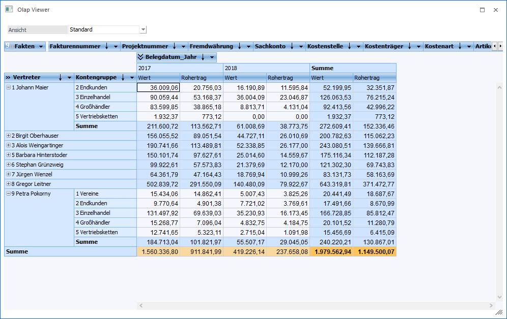
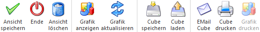
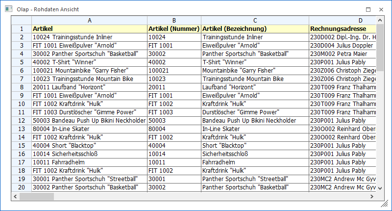

Wird eine Cube-Ausgabe durchgeführt öffnet sich der Olap Viewer.

Grundsätzlich ist die Ansicht im Olap Viewer frei definierbar. Hierzu gehören folgende Möglichkeiten:
ü Drop & Down von Dimensionen
ü Hinzufügen und / oder entfernen von Measures (Fakten)
ü Anzeige einer Chartgrafik
Ø Ansicht
Über die Auswahlliste können gespeicherte Ansichten ausgewählt werden, wobei die Ansicht "Standard" immer zur Verfügung steht (eine Änderung dieser Ansicht ist nur bei selbst erzeugten Cubes über den Cube Wizard möglich).
Neue Ansichten können über die Eingabe eines Namens und das Speichern dessen per Button "Ansicht speichern" erzeugt werden.
Ø nur aktueller Mandant
Mit Hilfe dieser Checkbox, welche nur bei selbst erzeugten Ansichten zur Verfügung steht, kann definiert werden, ob die Ansicht nur im aktuellen oder in allen Mandanten zur Verfügung stehen soll.
Buttons

Ø Ansicht speichern
Sobald unter "Ansichten" eine Ansicht ungleich "Standard" ausgewählt / erzeugt wurde, kann diese mit Hilfe des Buttons "Ansicht speichern" bzw. der Taste F5 gespeichert werden.
Ø Ende
Durch Anwahl des Buttons "Ende" bzw. der ESC-Taste wird der Olap Viewer geschlossen.
Ø Ansicht löschen
Sobald unter "Ansichten" eine Ansicht ungleich "Standard" ausgewählt wurde, kann diese mit Hilfe des Buttons "Ansicht löschen" gelöscht werden.
Ø Grafik anzeigen
Durch Anwahl dieses Buttons wird unterhalb des Cubes eine Grafik angezeigt.
Hinweis
Durch die Aktivierung der Checkbox "Chartgrafik speichern" wird die Anwahl des Buttons automatisch ausgelöst.
Ø Grafik aktualisieren
Durch Anwahl des Buttons "Grafik aktualisieren" wird die Chartgrafik unterhalb des Cubes bei jeder Interaktion im Cube (z.B. verschieben einer Dimension) automatisch aktualisiert.
Ø Cube speichern
Wird der Button "Cube speichern" gedrückt, dann öffnet sich eine DropDown-Auswahl über welche entschieden werden kann, in welchem Format das Cube-Ergebnis gespeichert werden soll.
Ø Cube laden
Mittels "Cube laden" Button kann ein Offlinecube (eine ".cube"-Datei) in den Olap Viewer geladen werden.
Ø EMail Cube
Durch Anwahl des Buttons "EMail Cube" kann der Cube (die ".cube"-Datei) per Postausgangsbuch versendet werden.
Ø Cube Drucken
Wird der Button "Cube Drucken" gewählt, so öffnet sich die Druckvorschau und das Cube-Ergebnis kann ausgedruckt werden.
Ø Grafik drucken
Wird der Button "Grafik drucken" gewählt, so öffnet sich die Druckvorschau und die Cube-Grafik kann ausgedruckt werden.
Hinweis
Die Anwahl des Buttons ist nur möglich, wenn der Button "Grafik anzeigen" aktiviert wurde.
Funktion der linken Maustaste im Olap Viewer
Ø Rohdaten Ansicht
Wird mit der linken Maustaste im Datenbereich ein Wert doppelt angeklickt, so öffnet sich eine Rohdatenansicht in Tabellenform, welche die genaue Zusammensetzung des Werts anzeigt (nähere Information entnehmen Sie bitte dem Kapitel Olap - Rohdaten Ansicht).
Beispiel

Funktionen der rechten Maustaste im Olap Viewer
Mittels rechter Maustaste können im Olap Viewer viele Einstellungen durchgeführt werden. Dabei werden je nach Bereich wo die rechte Maustaste gedrückt wird, die entsprechenden Einstellungen zur Verfügung gestellt. Es wird unterschieden zwischen den Bereichen:
ü Rechte Maustaste - Dimensionen
ü Rechte Maustaste - Datenbereich